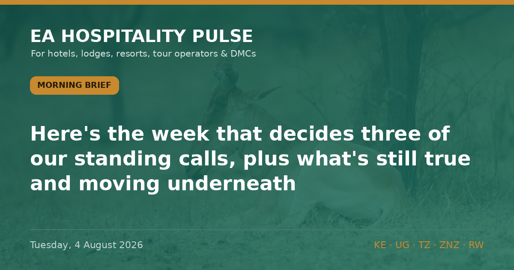

← All editionsNo new story clears the gate this morning — so here's the week that decides three of our standing calls, plus what&.
No new story clears the gate this morning — so here's the week that decides three of our standing calls, plus what's still true and moving underneath.
━━━━━━━━━
1️⃣ THE 12 AUGUST WEEK — EIGHT DAYS TO THREE CALLS
Next Tuesday the US CDC §362 Ebola entry order expires (in force to 4:59pm EDT, 12 Aug, per 91 FR 43636, 16 Jul). Three of our open forecasts resolve around it. Our base case on all three is NO CHANGE: the order gets renewed with DRC still listed (DRC transmission is uncontrolled — 3,605 confirmed, 1,587 deaths, 44% CFR as at 30 Jul, per WHO DON614); the US keeps Uganda at Level 4 despite its 28 Jul end-of-outbreak declaration; and the rendered Kenya advisory page still reads "17 March 2025". Scoreboard from last week: our DRC-caseload call (>3,600) landed correct on 3 Aug; our call that Kenya's domestic press would report the 29 Jul re-issue landed incorrect — they still haven't, so our lead holds.
🎯 So what: don't wait for the 12 Aug headlines to plan. If the base case holds, there is nothing in next week's decisions that justifies discounting Kenya, Uganda or coast rate through mid-August. Plan for continuity, not a shock.
🏷 All | Regional | Reported
2️⃣ STILL TRUE: THE ADVISORY BOARD IS UNCHANGED
US: Kenya L2, Tanzania/Zanzibar L2, Uganda L4, Rwanda L3. UK: Kenya L2, Tanzania/Zanzibar L1, Uganda L3, Rwanda L2. Kenya's Eastleigh & Kibera remain Reconsider Travel (L3), NOT Do Not Travel — the primary page still dates 17 March 2025 (verified 2–3 Aug). No government has moved a level.
🎯 So what: no basis to change rate or security messaging anywhere in the region this week. A confirmed "no change" tells you not to discount.
🏷 All | Regional | Confirmed
3️⃣ COST PULSE: THE PLANNING WINDOW IS STILL OPEN
EPRA holds Nairobi diesel at KSh 222.86/L and super at KSh 214.03/L through 14 August — propped by the Petroleum Development Levy and the 8% petroleum VAT rate extended to 14 Oct. Murban crude, the leading indicator for the next review, softened to USD 67.99/bbl (−1.01 w/w, CBK bulletin) — the 15 Aug cycle is more likely to hold or fall than rise. KES steady at 129.30/USD; reserves at 6.0 months' cover. The quiet killer: Kenya electricity pass-through charges now top KSh 5/kWh and rose again in July.
🎯 So what: lock safari-transfer and generator-fuel contracts now, before the 15 Aug review and the October VAT cliff. Read the pass-through line on the power bill, not the tariff band.
🏷 Bush | Kenya | Confirmed
━━━━━━━━━
• Fri 8 Aug — CBK weekly bulletin (FX, reserves)
• Tue 12 Aug — US CDC §362 order expires; watch renewal + whether Uganda stays listed (calls P044/P034/P040 resolve)
• Fri 15 Aug — EPRA fuel review (calls P025/P028 resolve)
• 19–21 Aug — Hotel Expo Kenya, KICC Nairobi — a city-hotel midweek compression window
• 28 Aug — World Travel Awards Africa Gala, Zanzibar — north/east-coast compression
🔗 This edition on the web: https://eahospitalitypulse.com/editions/pulse-2026-08-04-morning.html
— EA Hospitality Pulse | Daily intelligence for city, bush & beach properties
📣 Telegram (full editions) 💬 WhatsApp (daily skim) 💼 LinkedIn (the Big Read) 🗂 Every edition